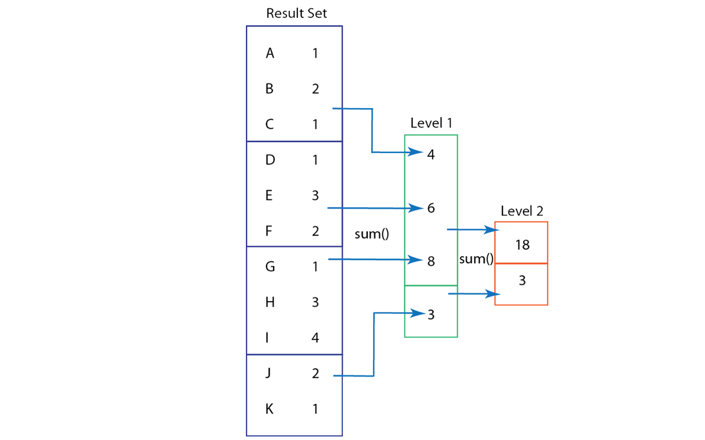
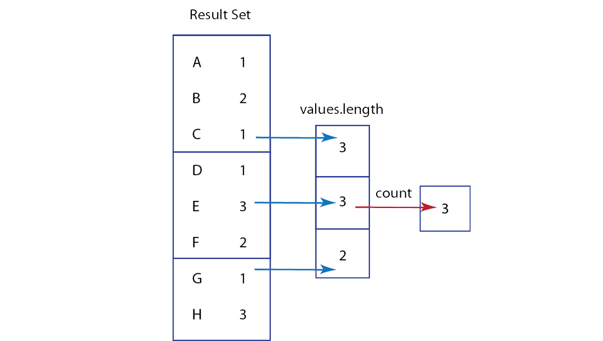
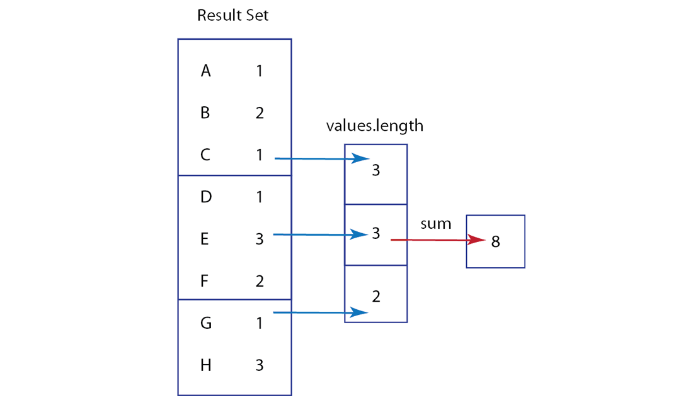

Understanding custom reduces and rereduce
If you are going to write your own custom reduces, you should be aware of how the rereduce option works in Couchbase Server. Rereduces are a form of recursion where Couchbase Server precalculates preliminary results and stores these results in a structure known in computer science as a b-tree. First it applies the reduce function to groups of data in a result set and then stores these calculated values in the b-tree. The Server will then apply the reduce function to the calculated values, and will repeat the process on these resulting values, if needed. Couchbase Server performs the reduce as an initial reduction and then re-reduces repeatedly to provide better performance, and faster access to results.
If you have a large initial result set, Couchbase Server may create a b-tree structure with several levels, where the results from the initial reduce are stored at one level, and results from the following re-reduces are stored at the second, third, and forth level, and so on. The number of precalculated results decreases at each level, as Couchbase Server re-applies the reduce function:
This example shows the initial result set, and the different levels of results that exist when we sum numbers as part of our reduce and rereduces. The first level represents the result set generated by a map function where the key is a letter and the value is a number. Additional levels represents the results from two rereduces. In this example, we assume the server applies a reduce and then applies rereduces to groups of three items. In reality the size of the blocks are arbitrary and determined by internal logic in Couchbase Server. When Couchbase Server applies the reduce function to groups of three from the original result set, it sums each set and stores 4, 6, and 8 as precalculated results. The last items in a result set only consist of two items, so those are summed and stored as the value 3, The second time Couchbase Server applies the function as a rereduce, we get 18 which is the sum of the set of three numbers: 4 + 6 + 8. The second value for our rereduce is the remaining number 3, which has no other values to form a group of three and to be summed with.
Now that you see the logic of rereduces with Couchbase Server, you may wonder if this matters to you at all. It does matter if you perform want to perform a calculation based on the original result set. Because you have the option of performing a reduce and rereduce, when you choose this option you can no longer assume that you final result will be the same result you would have gotten if you performed the reduce on the initial data set.
For instance, this may be a consideration if you create a custom reduce which performs some type of counting. Couchbase Server already provides a built-in version of a count function which you can use for a reduce, but imagine you have a scenario where you need to do custom counting for your scenario. In this case, if you provided a count-type function the rereduce would apply the count to the precalculated values, not the original result set. You would get a count based on a reduced set, not the true number of values in the initial result. In the example below, if you use a count-type function to rereduce, you would get 3, which represent the number of values stored after the initial reduce:
So instead of getting the number of keys, which is 8, you get the number of values in the reduction, which is only 3. This is not what you might have expected, had you known about rereduce before you built your custom reduce. Instead of using a type of counting function for and performing rereduce, you actually need to sum after the initial reduction. The following code samples demonstrates the custom reduce function you would use:
function (keys, values, rereduce) {
if(!rereduce) {
return values.length;
} else {
var sum = 0;
for (i in values) {
sum += values[i];
}
return sum;
}
}
For all custom reduces you will write the reduce function to take keys, values, and rereduce as parameters. Couchbase Server will execute the custom reduce and provide the function keys and values from a map function, and will provide a boolean for rereduce. Whether this Boolean is true or false is determined by internal Couchbase Server logic. So we should always provide a custom reduce function that can handle the case where rereduce can be false or rereduce is true. This way we cover our bases and create a custom reduce which produces results we expect.
For this example if rereduce is false, Couchbase Server will not perform the reduce on a reduction, rather it will perform it on the original result set from a map function; therefore we can return the length of all values in the result set. In this case we will get the value 8. If rereduce is true, we need to handle this by performing a sum of the reduction which is the correct number of items, 8. The logic for this second case is illustrated below:
Be aware that this is a very contrived example to demonstrate the rereduce and how to handle it in your custom reduce. In reality Couchbase Server provides a built-in function _count which automatically handles the rereduce so that you get a count of all items in a result set, not the count of the reduced set. Nonetheless you should keep this behavior in mind if you perform a custom reduce which assumes the calculations are performed on the initial result set. If you want to find more information about the rereduce, and other forms of custom reduces, see Reduce functions.